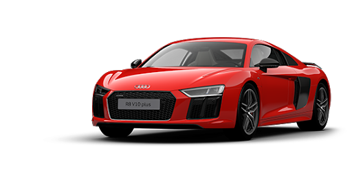

Audi R8

- The Audi R8 is a mid-engine, 2-seater sports car, which uses Audi's trademark quattro permanent all-wheel drive system.It was introduced by the German car manufacturer Audi AG in 2006.
- The car is exclusively designed, developed, and manufactured by Audi AG's private subsidiary company manufacturing high performance automotive parts, Audi Sport GmbH (formerly quattro GmbH), and is based on the Lamborghini Gallardo and presently the Huracán platform.The fundamental construction of the R8 is based on the Audi Space Frame, and uses an aluminium monocoque which is built using space frame principles. The car is built by Audi Sport GmbH in a newly renovated factory at Audi's 'aluminium site' at Neckarsulm in Germany.